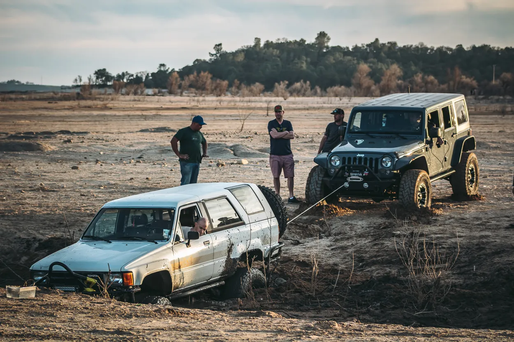
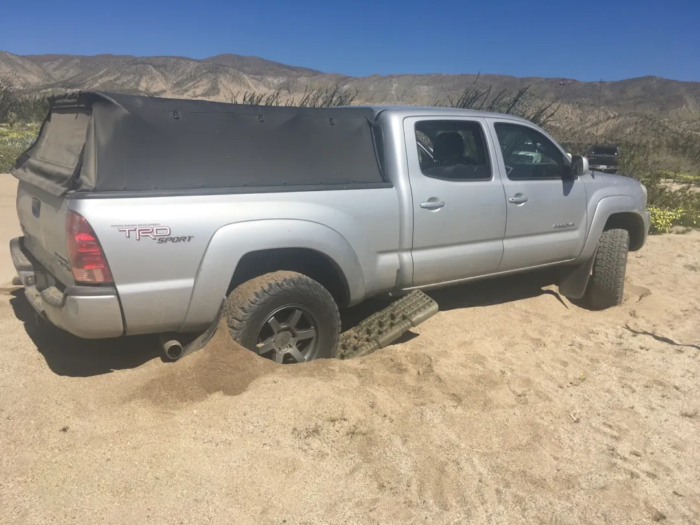
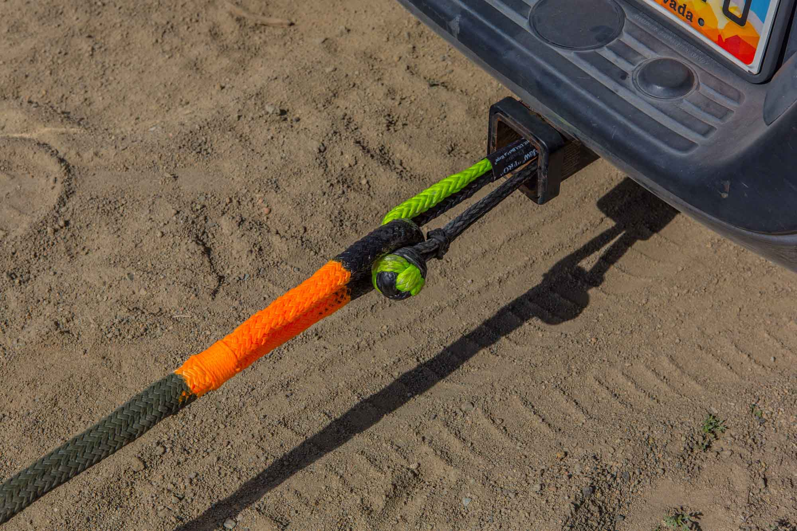

Recovery Products
The recovery products below are the most popular recovery products that are offered here! We are here to give you the best quality, and service that anyone can offer! Check out the following products!
Winch
Winches are great because it allows you to hook onto someone, and pull them out of a sticky situation when you don't have a ton of room, and aren't able to pull them out with a recovery rope.
Tread Boards
Tread boards are great accessories for when you are stuck in a simple dirt trap, or sand trap, where you can dig under and get enough leverage underneath to pull yourself on top.
Soft Shackle
Soft shackles are great because they give you a little bit more flex than a metal hook, or a D-Ring, and are often easier to find spots to hook onto and recover.